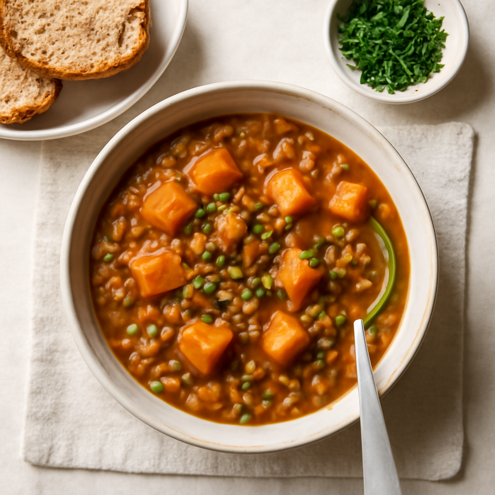

Monday — Lentil and Sweet Potato Stew

Cook Time: 40 minutes
Method: Pressure Cooker
vegan30 minutes
Ingredients for 6
- 1.5 cups green lentils
- 1 large sweet potato
- 1 carrot
- 1 celery stalk
- 1 onion
- 3 cloves garlic
- 4 cups vegetable broth
- 1 tsp cumin
- 1 tsp turmeric
- Salt
- Pepper
Instructions
- Peel and dice the sweet potato, carrot, and celery.
- In the pressure cooker, combine lentils, diced vegetables, minced garlic, broth, and spices.
- Cook on high pressure for 15 minutes and let it naturally release.
- Stir well before serving.
Toddler Notes
- Mash the lentils and sweet potatoes to create a smoother texture for easier eating.
← Back to weekly plan